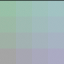

Open a .blend authored for Cycles, switch Render Engine to SuperLuxCore, then click Import Cycles Settings in Render Properties. The operator copies:
| Cycles | SuperLuxCore |
|---|---|
samples | halt.samples (hard cap; the
noise-level stop still ends early on easy scenes) |
max_bounces | path.depth_total |
diffuse_bounces | path.depth_diffuse |
glossy_bounces | path.depth_glossy |
transparent_bounces | path.depth_specular |
transmission_bounces | path.depth_specular
(min of the two) |
film_transparent | first image-pipeline
transparent_film |
use_denoising | denoiser.enabled |
view-layer samples | per-layer halt override |
Math and Vector Math Snap use Blender's floored-increment rule,
not nearest rounding: Snap(1.75, 1) = 1 and
Snap(-1.25, 1) = -2. Vector increments work per component;
a zero increment produces zero in that component. Linked inputs and the
Math node's Clamp option are supported on CPU and GPU.
Texture Coordinate UV, Normal, Generated, Object and Reflection outputs are routed separately from Vector Math. Window and Camera outputs still report their documented unsupported-coordinate warnings.
The scalar Math node's Clamp checkbox limits the completed
operation to [0, 1]. It applies to native textures,
helper-generated expressions and folded constants alike; linked inputs
do not bypass it. For example, clamped Exponent(1) produces
1 instead of e, and clamped
Sine(-π / 2) produces 0. Disabling Clamp preserves
the original operation result.
Square Root also preserves linked inputs: Sqrt(0.25) = 0.5
with either Clamp setting, and unclamped Sqrt(9) = 3. Its
native power texture receives the actual base and exponent, rather than
silently using their defaults.
Floor, Ceil, Truncate, Fraction and Round use native renderer operations, not compositions of nearest rounding. Negative coordinates and exact integer boundaries follow Blender's rules:
| Value | Floor | Ceil | Truncate | Fraction | Round |
|---|---|---|---|---|---|
| -1.5 | -2 | -1 | -1 | 0.5 | -1 |
| -1 | -1 | -1 | -1 | 0 | -1 |
| 0 | 0 | 0 | 0 | 0 | 0 |
| 1.75 | 1 | 2 | 1 | 0.75 | 2 |
Fraction is x - floor(x). Round evaluates
floor(x + 0.5) with a float32 half-add, including for constant
inputs. Vector Math Floor, Ceil and Fraction apply independently to each
component on CPU and GPU.

This actual Blender SUPERLUXCORE render uses Generated coordinates:
Scale(4) → Add(-2) → Vector Floor → Add(3) → Scale(0.15) → Emission.
The discrete cells include negative-coordinate intervals. This is a
display-managed emission probe, not a surface-shading or speed benchmark;
the table describes the mathematical results before colour management.
A Math input is a scalar, even when linked from a vector or colour. Vectors convert to the mean of their three components; colours convert to luminance using the active OpenColorIO configuration. The resulting scalar is broadcast when used as an Emission colour.
| Input to Sine | Scalar result |
|---|---|
| Vector (0, 1.5, 0) | sin(0.5) ≈ 0.479426 |
| Colour (0, 1.5, 0) | sin(1.5 × 0.7152) ≈ 0.878541 with the default config |
Conversion occurs at scalar socket boundaries, including group inputs/outputs and Math's third operand. RGB to BW uses the same luminance coefficients. Already-scalar links need no identity-power conversion texture. Vector Math remains componentwise.
Math Compare returns one when
abs(a-b) <= max(epsilon, 1e-5), zero otherwise.
Equal inputs compare true even with zero or negative epsilon. A
difference exactly equal to a positive epsilon is included.
| A | B | Epsilon | Compare |
|---|---|---|---|
| 1 | 1 | 0 | 1 |
| 0.125 | 0 | 0.125 | 1 |
| 0.000005 | 0 | 0 | 1 |
| 0.00002 | 0 | -0.5 | 0 |
Comparison uses float32 subtraction, including at large magnitudes; unordered NaN differences compare false. Scalar, linked and third-input conversions follow the same socket rules above. Accurate native SDL number formatting also preserves large values when a scene is exported and read back.
Math and Vector Math Minimum/Maximum use native, componentwise
mathfunc.min/max operations. Constant vectors retain their
individual components; scalar Math inputs use the socket conversions
above. Math's Clamp remains a separate post-operation stage.
The previous subtract/compare/multiply/add selection could overflow even with finite inputs near float32's maximum. The native operation avoids that intermediate subtraction. With two linked inputs, explicit texture nodes decrease from six to three; arithmetic operations decrease from four to one. This is a measured graph reduction, not a measured render-speedup claim.
The CPU/isolated Metal regression corpus passed 302 actual render checks, including linked/folded extrema, full-range input normalization and tiny-input quotients. Another 70 checks passed using the installed extension and native package. This requires the current engine build; an older cached wheel does not gain native operations from an add-on source update alone.
Principled BSDF exports as OpenPBR (see
Materials) — no SSS radius / sheen / aniso
approximation needed. Nodes that have no physical counterpart
(ShaderNodeShaderToRGB, Eevee specular) log a warning during
export.
Portals (light.cycles.is_portal) and per-object ray
visibility carry over. Motion blur uses use_motion_blur and
motion_steps; deformation blur uses use_deform_motion.